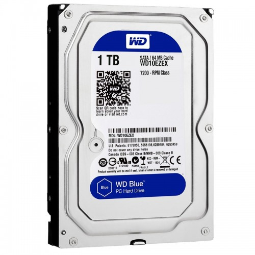
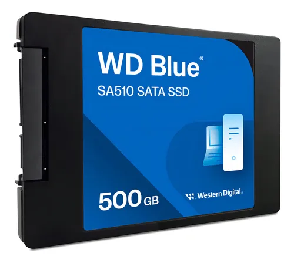

HDD (Disco Duro Tradicional)

Los HDD utilizan discos mecánicos para almacenar datos. Son económicos pero más lentos.
SSD (Unidad de Estado Sólido)

Los SSD no tienen partes móviles, lo que los hace más rápidos y resistentes.
NVMe

Los NVMe son una versión avanzada de SSD con velocidades mucho más altas.
Disco Externo

Son portátiles y se conectan por USB para transportar información fácilmente.